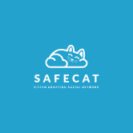
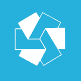
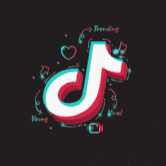
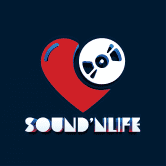
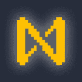
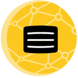
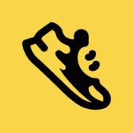
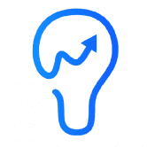

WIZZ NETWORK IO WIZZ NETWORK - 提供加密聊天信使和数据存储。赌徒战争游戏和 DEX。 WIZZ 也是一个备用 BP 和代理，可以使用您的支持。今天访问我们。开启你的 WIZZ！WIZZ NETWORK
KlimaDao 使用由真实碳资产支持的数字货币 KLIMA 对抗气候变化并获得奖励。KlimaDAO 是新绿色经济的中心。 KlimaDAO 建立在节能的 Polygon 网络之上，使用一系列技术来减少市
 Safecat SAFECAT 价格实时数据 Safecat 是一个基于区块链技术的小猫收养社交网络，主要通过我们先进的移动应用程序运行，并为 Foster Homes 和 Animal Shelters 提供高度自适应的软件。我们的基本使
 Swirge 简而言之，摇摆 Swirge 的生态系统包含一个去中心化的社交媒体、一个去中心化的金融系统，以及一个建立在币安智能链和 Matic 网络上的市场。 Swirge 是一个以用户为中心
 TikTok2Earn TikTok2Earn 将帮助您以当前 TikTok 平台所没有的许多简单方式赚钱，无论您是内容创作者还是只是享受它。 TikTok2Earn 旨在成为一个多功能的视频录制应用程序，主要使用短视频 - 多
Tip Me A Coffee TipMeACoffee 是一个社交媒体 dapp，用户通过分享和点赞获得奖励。 这是一个完整的基于 web3 的社交网络，您可以在其中分享以赚取收益。 TipMeACoffee 社交媒体 dapp 由微风 DAO 发起，
Rosetta Chain Rosetta Chain Dapp 允许用户在 Tron 区块链上编写（雕刻）私人和公共承诺。用户可以刻上他们的爱、决心、小指承诺、协议甚至想法。 Rosetta 链有助于记住、分享和保持每一刻。
SoundBox SoundBox-Powered by #animocaBRANDS 与#TheSandboxGame 合作 #SoundBox 将在#Kucoin 上列出。 世界上第一个#Listen2Earn 系统。 SoundBox 是一个能够满足音乐世界所有
 SoundNlife Sound’n Life 是一个声音货币项目，使用 NFT 音乐制作加密资产。基于 Web 3.0 区块链开发，我们创建 NFT 音乐收藏，帮助您通过听音乐赚取 $SOUND 代币。你有没有想过？一边听自己
 Sputnik DAO 债券：1NEAR 投票期：5天 目的：发展 Sputnik DAO 并支持 DAO Mesh 的发展 Sputnik 提供世界上最灵活的 Wi-Fi 热点管理系统。 SputnikNet 是我们基于云的服务，它使 Wi-Fi 服务提供商能够通过
 Steempress 一个连接 WordPress 和 Steem 的 WordPress 插件 成立 Steem 企业联盟的想法发生在 2018 年 11 月在克拉科夫举行的 Steemfest 3 期间。在那里，我们从会谈中得出的总体结论是，Steem 的未来主要
STEMsocial STEMsocial 项目于三年多前启动，旨在在 Hive 上建立一个对科学、技术、工程和数学 (STEM) 领域感兴趣的人们的社区。 我们认为，让 Hive 成为 STEM 更好的地方对于整个平台的长期发
 Step.app Step App 是协议上的第一个应用程序，由核心团队构建。 NFT 经济迎来了各种山寨币行业的牛市。 其中最突出的是 GameFi 和元界产品在 2021 年大部分时间的主导地位。去年表
Hive Blog Hive 的社区界面🐝 Hive Creators Awards 是#HIVE 社区的一项活动，旨在表彰 Hivers 和活跃社区在生态系统中所做的工作，提名将于 8 月 1 日开始。 HIVE 博客是所有种族、性别、宗
 Ideamarket Ideamarket 是一个市场，您可以用美元投票以建立想法和人员的可信度，而无需信任中心化的第三方。 Ideamarket 旨在通过使风险管理成为公共信誉的仲裁者来取消同意。 为了帮
MetaMarketing DAO 什么是元营销 DAO？我如何从 MetaMarketing DAO 中受益？ MetaMarketing 是一种研究营销及其与生活各个方面的关系的方法，它侧重于营销中的所有社会、道德、科学和商业经验，从而
Doge Sound Club Doge Sound Club 是一个面向 NFT 收藏家的社区，由基于 NFT MATES 的治理机构运营。 DSC MATE 是一个包含超过 10,000 幅 NFT 艺术品的大量头像集合，其中 10,000 幅作品中的每一幅代表具有独特特
Dreamr Dreamr 是一款与 web3 集成的混合移动应用程序，供人们追求梦想。 Dreamr 利用社区建设功能、DeFi 和 p2p 市场为平台用户提供实现任何梦想的资源和工具！ Dreamr 通过 $DMR 代币
FMTLOL FMTLOL Dapp 用于创建用户活动以增加用户的知名度，通过添加社交帐户链接并允许用户在关注此帐户时获得 FM 令牌。 Follow Me 是基于 DeFi 的社交媒体奖励代币。该令牌允许用
FullBunny.network 如果您想在世界任何地方在 Binance Smart Chain 或 Polygon 上发起众筹活动，那么您来对地方了。 FullBunny.network 将保持一个抗审查、去中心化和去信任的平台。 在 Binance Smart Chain 或 Polygon 上发起活动。 从 4
Livepeer 用于 DApp 的去中心化直播视频流协议 推特更新🚨 我们的 Twitter 句柄现在是 @Livepeer！ 🎉 🔁 通过转推传播信息！ Livepeer 本周看到价格下跌。 Livepeer 的价格在过去 7 天下
Lunrcrush LunarCrush 收集社交媒体上有关比特币的活动、数以千计的 alt 和交易所，以及有影响力的人发布的内容，并将其提炼成易于消化的小块。 您使用 LunarCrush 的次数越多，它就会变